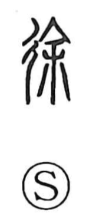

徐

Kun: omomuro, yuruyaka | On: jo
slowly ・ gentle ・ gradual
Explanation
徐 is a picto-phonetic character built from 彳, the step/radical of going (the left half of 行, a crossroads), and 余 as its sound element. The phonetic 余, also seen in 除 and 叙, originally depicted a large handled needle used to lance a boil and drain pus and blood, bringing relief and relaxation. The same imagery extends to piercing the earth to dispel malevolent forces beneath the ground, ensuring roads are safe. Thus 途 names a road ritually purified, and 徐 describes passage along it becoming smooth and unimpeded. From this sense of easing and release, the character comes to mean “slowly,” “gently,” and “gradually.”